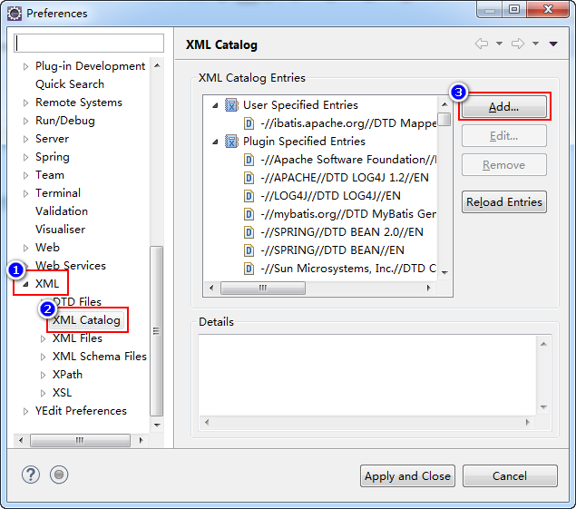
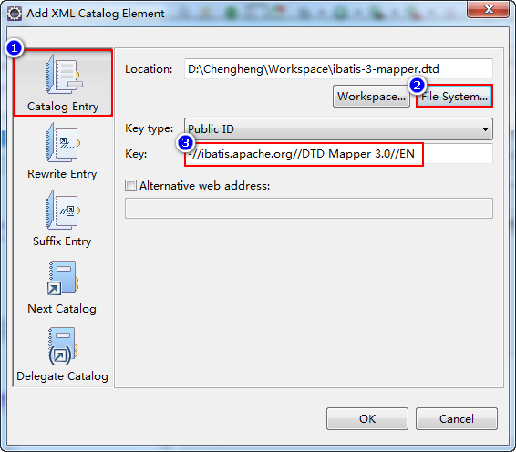

接手到新的项目，首先，应该大致分析这个项目中有哪些类型的数据，例如：商品、商品分类、用户、收货地址、收藏、购物车、订单……
然后，对这些需要处理的数据排个开发顺序，通常遵守的原则有2个：由简到难，由基础数据开始！所以，以上数据的开发顺序应该是：用户 > 收货地址 > 商品分类 > 商品 > 收藏 > 购物车 > 订单。
接下来，根据需求（也可以根据现有的界面设计）分析每种数据处理时涉及的功能，例如用户数据的相关功能有：注册、登录、修改密码、修改个人资料、上传头像，并对这些功能的开发设计先后顺序，通常遵守增、查、删、改的顺序，可以是：注册 > 登录 > 修改密码 > 修改个人资料 > 上传头像。
针对每个功能，开发顺序应该是：数据库与数据表 > 实体类 > 持久层 > 业务层 > 控制器层 > 前端界面。
做项目之前，一定要把某个数据或功能拆出来，一次只解决一个问题！
创建数据库：
CREATE DATABASE tedu_store;
使用数据库：
USE tedu_store;
创建用户数据表：
CREATE TABLE t_user (
uid INT AUTO_INCREMENT COMMENT '用户id',
username VARCHAR(20) UNIQUE NOT NULL COMMENT '用户名',
password CHAR(32) NOT NULL COMMENT '密码',
salt CHAR(36) COMMENT '盐值',
gender INT COMMENT '性别，0-女性，1-男性',
phone VARCHAR(20) COMMENT '电话',
email VARCHAR(50) COMMENT '邮箱',
avatar VARCHAR(50) COMMENT '头像',
is_delete INT COMMENT '是否删除，0-未删除，1-已删除',
created_user VARCHAR(20) COMMENT '创建执行人',
created_time DATETIME COMMENT '创建时间',
modified_user VARCHAR(20) COMMENT '修改执行人',
modified_time DATETIME COMMENT '修改时间',
PRIMARY KEY (uid)
) DEFAULT CHARSET=UTF8;
打开https://start.spring.io，准备创建SpringBoot项目，勾选上MySQL和MyBatis，将下载的项目导入到Eclipse中，由于添加了数据库相关依赖，首先，必须在application.properties中添加连接数据库的配置，否则运行时会报告错误：
# datasource
spring.datasource.url=jdbc:mysql://localhost:3306/tedu_store?useUnicode=true&characterEncoding=utf-8&serverTimezone=Asia/Shanghai
spring.datasource.username=root
spring.datasource.password=root
由于4个日志属性在各数据表中都将存在，对应的实体类也都需要添加这些属性，所以，先创建实体类公共的父类cn.tedu.store.entity.BaseEntity用于定义这4个日志属性：
/**
* 实体类的基类
*/
abstract class BaseEntity implements Serializable {
private static final long serialVersionUID = -5882064199939706583L;
private String createdUser;
private Date createdTime;
private String modifiedUser;
private Date modifiedTime;
// SET/GET/toString
}
由于BaseEntity只在当前cn.tedu.store.entity包中使用，且不需要单独创建对象，所以，可以将访问权限设置为默认（删除public），并添加abstract修饰符。
然后，创建cn.tedu.store.entity.User实体类：
/**
* 用户数据的实体类
*/
public class User extends BaseEntity {
private static final long serialVersionUID = 8777086855777796877L;
private Integer uid;
private String username;
private String password;
private String salt;
private Integer gender;
private String phone;
private String email;
private String avatar;
private Integer isDelete;
// GET/SET/toString
}
1. 分析SQL语句
增加数据的SQL语句：
INSERT INTO t_user (除了uid以外的字段列表) VALUES (对应的值)
根据用户名查询用户数据的SQL语句：
SELECT uid, password, salt, is_delete FROM t_user WHERE username=?
由于以上查询还可以应用于“登录”功能，所以，查询的字段列表中，还应该添加与“登录”相关的字段。（如果暂时无法考虑得特殊周全，可以后续再补充）
2. 接口与抽象方法
首先，创建持久层接口cn.tedu.store.mapper.UserMapper，并添加抽象方法：
Integer insert(User user);
User findByUsername(String username);
所有的增删改操作，返回值都使用Integer。
由于当前是第1次编写持久层接口，还需要在启动类上添加@MapeprScan("cn.tedu.store.mapper")，用于指定持久层接口所在的包。
3. 配置映射
首先，在resources下创建mappers文件夹，然后，复制粘贴得到UserMapper.xml文件。
<mapper namespace="cn.tedu.store.mapper.UserMapper">
<!-- 插入用户数据 -->
<!-- Integer insert(User user) -->
<insert id="insert">
INSERT INTO t_user (
username, password,
salt, gender,
phone, email,
avatar, is_delete,
created_user, created_time,
modified_user, modified_time
) VALUES (
#{username}, #{password},
#{salt}, #{gender},
#{phone}, #{email},
#{avatar}, #{isDelete},
#{createdUser}, #{createdTime},
#{modifiedUser}, #{modifiedTime}
)
</insert>
<!-- 根据用户名查询用户数据 -->
<!-- User findByUsername(String username) -->
<select id="findByUsername"
resultType="cn.tedu.store.entity.User">
SELECT
uid, password,
salt,
is_delete AS isDelete
FROM
t_user
WHERE
username=#{username}
</select>
</mapper>
由于当前是第1次配置持久层映射，则需要在application.properties中配置mybatis.mapper-locations=classpath:mappers/*.xml，用于指定映射文件所在的位置。
完成后，应该编写并执行单元测试：在src\test\java下创建cn.tedu.store.mapper.UserMapperTestCase类，用于测试UserMapper接口中定义的抽象方法：
@RunWith(SpringRunner.class)
@SpringBootTest
public class UserMapperTestCase {
@Autowired
public UserMapper mapper;
@Test
public void insert() {
User user = new User();
user.setUsername("root");
user.setPassword("1234");
Integer rows = mapper.insert(user);
System.err.println("rows=" + rows);
}
@Test
public void findByUsername() {
String username = "root";
User result = mapper.findByUsername(username);
System.err.println(result);
}
}
1. 设计异常
在业务层中，应该把所有认为的操作失败（例如注册时用户名被占用、登录时用户名错误、登录时密码错误等等）设计出对应的异常！
则应该创建异常类：
cn.tedu.store.service.ex.ServiceException（继承自RuntimeException）
cn.tedu.store.service.ex.UsernameDuplicateException（继承自ServiceException）
cn.tedu.store.service.ex.InsertException（继承自ServiceException）
凡是自行抛出的异常，都应该是
RuntimeException的子孙类异常，同时，为了便于后续的处理，应该自定义某个异常类，然后，当前项目中会抛出的异常都应该是它的子孙类异常。凡涉及增删改操作都应该判断其返回值（受影响的行数），如果返回值与期望值不同，则抛出异常！
2. 接口与抽象方法
创建cn.tedu.store.service.IUserService接口，并添加抽象方法：
void reg(User user)
throws UsernameDuplicateException,
InsertException;
返回值：以操作正确（例如注册成功、登录成功等）为前提，如果需要向外（向方法的调用者，也就是控制器，甚至向客户端）提供某些数据，如果需要，则以这个数据的类型作为返回值，如果不需要向外提供数据，则使用void即可；
方法名称：应该与某个业务（在用户来看是某个功能）相对应，例如注册功能的方法名可以使用reg，登录功能的方法名称可以使用login；
参数：必须通过该参数能够调用持久层中的那些方法，以注册为例，可能需要调用持久层中的Integer insert(User user)和User findByUsername(String username)方法，则当前业务层接口中的抽象方法的参数也能基本一系列的运算能调用这2个方法。
3. 实现
创建cn.tedu.store.service.impl.UserServiceImpl类，实现IUserService接口，添加@Service注解，在类中添加@Autowired private UserMapper userMapper;，即：
@Service
public class UserServiceImpl implements IUserService {
@Autowired private UserMapper userMapper;
@Override
public void reg(User user)
throws UsernameDuplicateException,
InsertException {
// TODO Auto-generated method stub
}
}
在重写抽象方法之前，应该先将持久层接口中的方法复制到业务层实现类中，添加private权限，并实现这些方法。
如果是增删改方法，则应该判断返回值，并在返回值与期望值不相符时抛出对应的异常，方法原本的返回值类型修改为void；如果是查询方法，则直接调用持久层对象完成查询功能即可，并不抛出异常，因为同一个查询，有时查询到数据是正确的，而有时查询不到数据才是正确的，以“根据用户名查询用户数据”为例，在“注册”功能中，只有查询结果为null才能继续注册，即查询不到数据是正确的，但是在“登录”功能中，只有查询到数据才是正确的！
/**
* 插入用户数据
* @param user 用户数据
*/
private void insert(User user) {
Integer rows = userMapper.insert(user);
if (rows != 1) {
throw new InsertException();
}
}
/**
* 根据用户名查询用户数据
* @param username 用户名
* @return 匹配的用户数据，如果没有匹配的数据，则返回null
*/
private User findByUsername(String username) {
return userMapper.findByUsername(username);
}
然后，重写抽象方法：
@Override
public void reg(User user)
throws UsernameDuplicateException,
InsertException {
// 根据尝试注册的用户名查询用户数据
String username = user.getUsername();
User result = findByUsername(username);
// 检查用户名是否被占用：如果查询到数据，则表示被占用，如果查询结果为null，则表示用户名没有被占用
if (result == null) {
// 未占用：执行注册
insert(user);
} else {
// 已占用：抛出UsernameDuplicateException
throw new UsernameDuplicateException();
}
}
可以看到，重写的方法中，并不直接调用持久层对象来实现增删改查，而是调用自身的私有方法，间接的调用到持久层对象来实现数据访问。
完成后，应该编写并执行单元测试：在src\test\java下创建cn.tedu.store.service.UserServiceTestCase类，用于测试IUserService接口中定义的抽象方法：
@RunWith(SpringRunner.class)
@SpringBootTest
public class UserServiceTestCase {
@Autowired
public IUserService service;
@Test
public void reg() {
try {
User user = new User();
user.setUsername("mybatis");
user.setPassword("1234");
user.setGender(1);
user.setPhone("13800138006");
user.setEmail("mybatis@tedu.cn");
user.setAvatar("http://www.tedu.cn/mybatis.png");
service.reg(user);
System.err.println("OK");
} catch (ServiceException e) {
System.err.println(e.getClass().getName());
System.err.println(e.getMessage());
}
}
}
注册后，通过查询数据表，可以发现，仍有一部分数据没有值，例如isdelete、createduser字段等，所以，业务层的实现类还有一项任务，就是“保障数据的完整性”，那些不由用户（客户端）提交的数据，应该在业务层中来生成，所以，需要调整业务层实现类中的代码：
@Override
public void reg(User user)
throws UsernameDuplicateException,
InsertException {
// 根据尝试注册的用户名查询用户数据
String username = user.getUsername();
User result = findByUsername(username);
// 检查用户名是否被占用：如果查询到数据，则表示被占用，如果查询结果为null，则表示用户名没有被占用
if (result == null) {
// 设置is_delete
user.setIsDelete(0);
// 设置4项日志
Date now = new Date();
user.setCreatedUser(username);
user.setCreatedTime(now);
user.setModifiedUser(username);
user.setModifiedTime(now);
// TODO 密码加密
// 执行注册
insert(user);
} else {
// 已占用：抛出UsernameDuplicateException
throw new UsernameDuplicateException(
"注册失败！您尝试注册的用户名(" + username + ")已经被占用！");
}
}
【错误描述】 Caused by: com.mysql.cj.exceptions.WrongArgumentException: No timezone mapping entry for 'Asia/Shanghaispring.datasource.username'
【错误原因】 数据库连接字符串有误
【错误描述】 Caused by: java.sql.SQLException: Access denied for user 'root'@'localhost' (using password: YES)
【错误原因】 数据库密码错误
【错误描述】 NoSuchBeanDefinitionException ... 'cn.tedu.store.mapper.UserMapper' ... expected at least 1 bean ...
【错误原因】 没有找到UserMapper类型的对象，可能是因为在启动类（StoreApplication）上没有添加@MapperScanner注解，或注解中填写的包名是错误的，
【错误描述】 java.lang.NullPointerException at cn.tedu.store.mapper.UserMapperTestCase.findByUsername(UserMapperTestCase.java:29)
【错误原因】 所有的NullPointerException都是因为某个为null的值调用了属性或方法，应该根据下一行错误提示找到对应的代码，例如User result = mapper.findByUsername(username);，在这一行代码中，找到.左侧的对象，极有可能它是null值！如果一行代码中有多个.，则每个.的左侧都有可能是null值，甚至在某个方法的调用中，参数为null也会导致NullPointerException。如果某个值应该是自动装配的，则检查它有没有添加@Autowired注解，或它所在的类是否被Spring所管理。
【错误描述】 BadSqlGrammarException
【错误原因】 尝试执行的SQL语句存在语法错误，可以通过进一步的提示找出错误，如果进一步的提示中包含near关键字，则找near提示的代码的左侧的SQL语句部分，也可以直接去检查SQL语句
【错误描述】 There is no getter for property named ...
【错误原因】 在配置映射时，应该填写类中的属性名时，所填写的名称在类中并不存在
先连接达内公司内网，下载：http://schema.tedu.cn/proxy/dtd/ibatis-3-mapper.dtd
下载的文件存储到任意位置均可。
在Eclipse中打开设置，左侧选择XML > XML Catelog，并在右侧点击Add按钮：

然后，在左侧选择第1项，右侧选择到刚才下载的文件，然后在Key这一栏输入-//ibatis.apache.org//DTD Mapper 3.0//EN（在映射文件顶部Public字样右侧的字符串）：
